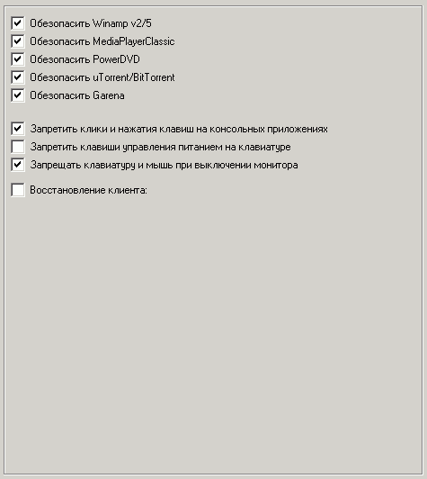

Наиболее важные опции на этой вкладке:
Обезопасить Winamp
При выборе этой опции в Winamp 2/5 будет обезопасен от потенциально-опасных действий пользователя (нельзя будет вызывать его настройки и пр.).
Обезопасить MediaPlayerClassic
Аналогично Winamp.
Обезопасить PowerDVD
Аналогично Winamp.
Обезопасить uTorrent/BitTorrent
Аналогично Winamp.
Обезопасить Garena
Аналогично Winamp.
Запретить клики на консольных приложениях
Такие приложения как FAR, cmd.exe станут безопасными.
Однако данная опция не будет работать в Windows Vista/7 если включен UAC (User Account Control) (Панель управления->Пользователи и группы->Включение/Отключение UAC)
Запретить клавиши управления питанием на клавиатуре
Управляет состоянием клавиш Sleep/Wake. Клавиша Power будет запрещена только если включен запрет на кнопку "Shutdown" при нажатии CTRL+ALT+DEL (вкладка "Безопасность: Система").
Опция не будет работать в Windows Vista/7
Запрещать клавиатуру и мышь при выключении монитора
Рекомендуется при удаленном администрировании, однако лучше не использовать совместно с RemoteDesktop.
Восстановление клиента
Рекомендуется использовать совместно с программами контроля клуба (GameClass и пр.). Выбирается путь к EXE-файлу клиента и пока он не запущен, пользователь не сможет запускать ярлыки с рабочего стола шелла. Также если клиент будет каким-то образом снят пользователем, то функция сама запустит его в этом случае.